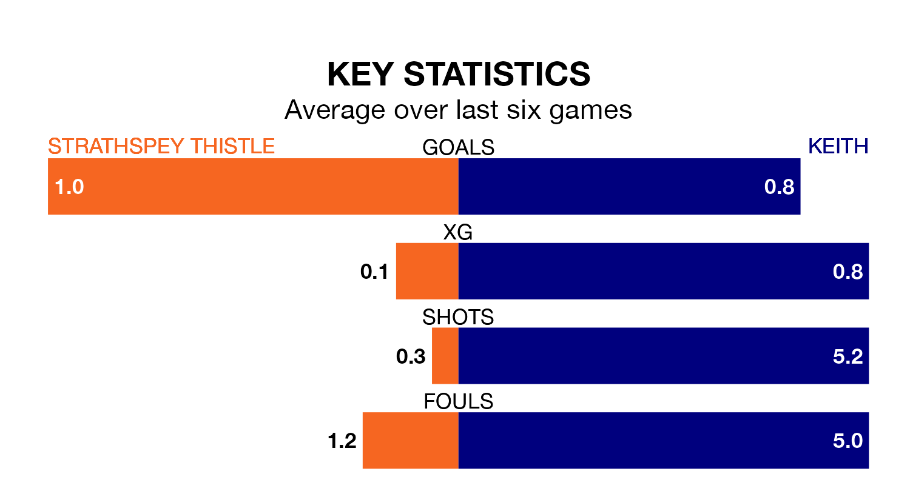

Saturday's early match at Seafield Park sees two relegation candidates play each other, as bottom of the table Strathspey Thistle host 15th-placed Keith.
Strathspey Thistle have picked up seven points from their first seven Highland Football League games, with two wins and one draw.
That is 13 points less than Keith have collected, having won five and drawn five.
Strathspey Thistle are in terrible form in the Highland Football League, with no wins and a draw from their last six games.
With two wins and three draws over that period, Keith's form is much better – they have taken nine points from 18, compared to the home team's one.
In the last 10 years, Strathspey Thistle and Keith have played each other on 13 occasions. Strathspey Thistle won one of them, Keith 11, and they drew once.
On average, Strathspey Thistle scored 1.2 goals and Keith 3.6 in those matches.
Their last meeting was on November 15, when Keith won 3-1 at home.
With 25 goals in 24 games so far this season, Strathspey Thistle are the league's lowest scorers with 1.0 goals per game. And they are conceding more than average, letting in 94 goals at a rate of 3.9 per game.
The visitors are also below average scorers, with 1.2 goals per game, compared to a league average of 1.9. They have conceded 2.0 goals per game.
Strathspey Thistle's last match was on Wednesday, a 10-1 loss against Brora Rangers.
Keith drew 1-1 with Nairn County last time out, also on Wednesday.
Updated: 09:34 (UTC), 08/03/24